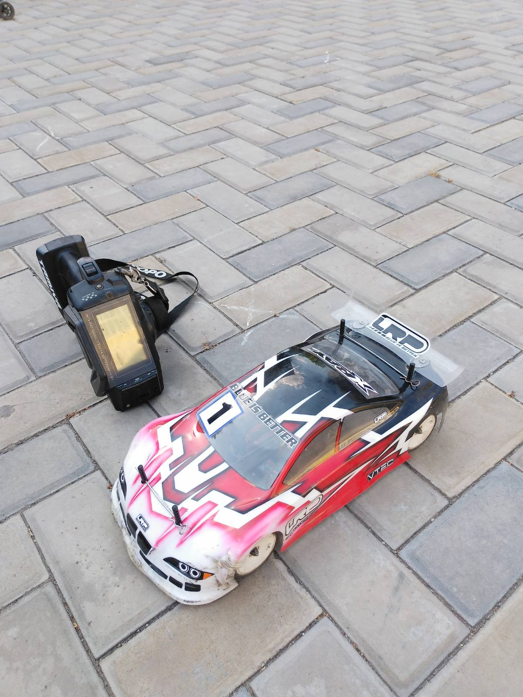
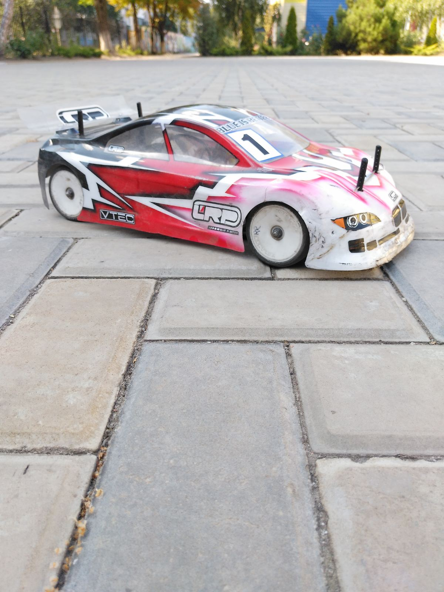
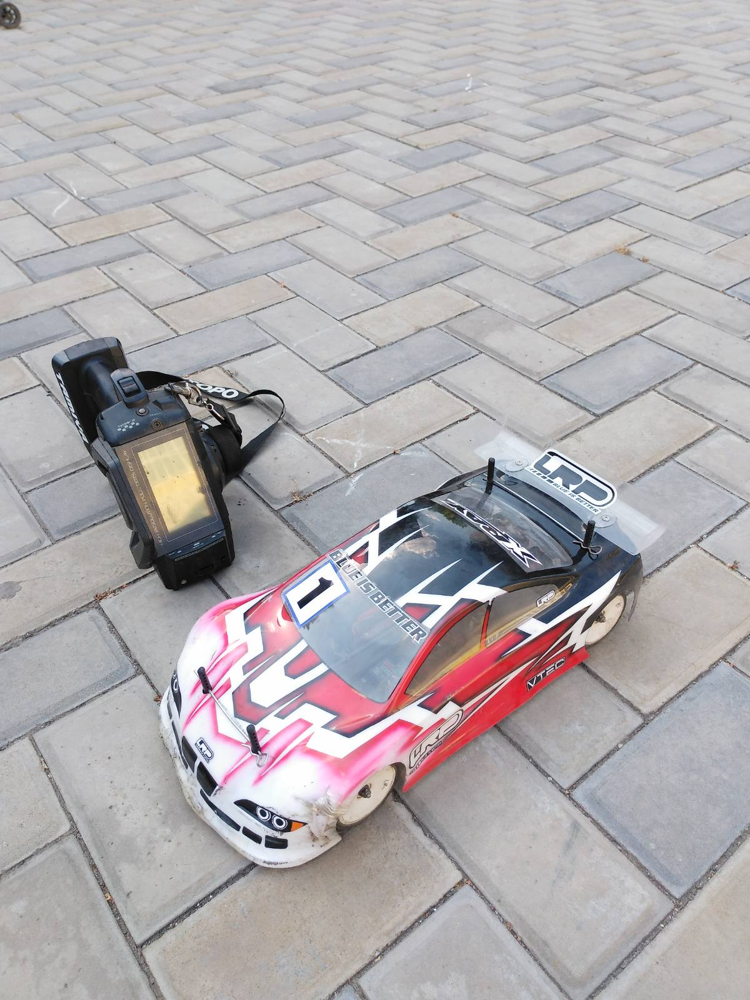
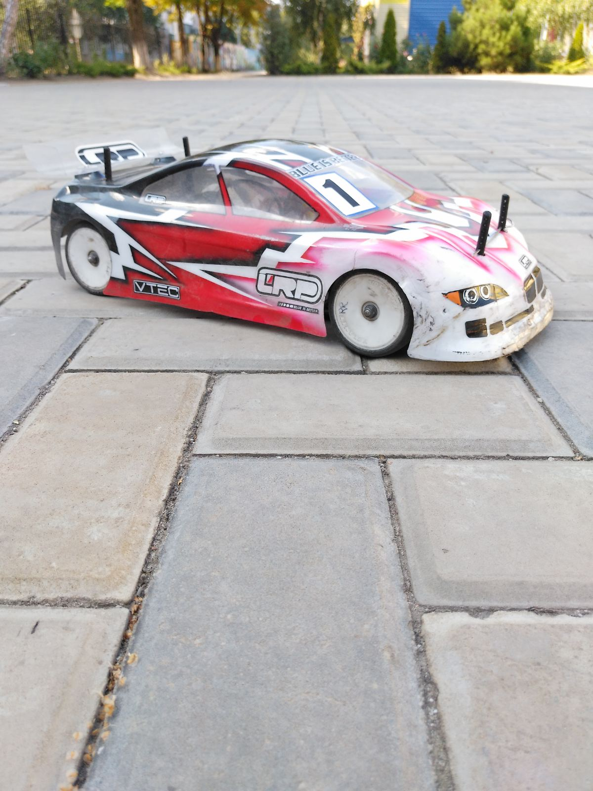

І тільки незмінними залишались захисники України славетні воїни козаки-бійці Збройних Сил України, а з ними у нас і залишилися і їхні традиції введення бойових дій і звичайно відпочинку. Життя на порубіжні лесу і степу, Європейської і Азіатської цивілізацій вимагало від воїнів України перебування у постійному тонусі і готовності протистояти будь-якому ворогу. Цей психофізичний тонус набувався і підтримувався різноманітними козацькими розвагами і забавами, що ними завжди славився український народ. І ми –ветерани АТО і ООС, нашадки славетніх воїнов – козаків, щоб пригадати здобутки предків та дорівнятися до них своїми досягненнями, осучаснити традиції козацтва, вирішили провести серію міні-турнірів з автомодельного спорту – «КОЗАЦЬКІ розваги», між збірною дітей і збірною ветеранів АТО, ООС міста Покровськ і Покровського району. Серія міні-турнірув будуть проводиться у декілька етапів, присвяченних видатним датам Українського народа :14 жовтня-День Українського козацтва, 6 грудня- День Збройних Сил України, 14 березня – День Українського добровольця. Взяти участь в турнірі, в складі збірної ветеранів АТО, ООС ) може будь який ветеран російсько-української війни. Для збірної ветерані попередньо буде проведене коротке навчання і тренування.Для участі в турнірі в складі команди дітей потрібно відвідувати, бути записаним, гурток автомодельного спорту при «Станції юних техників» міста Покровськ. Організатор змагань «Покровська міська організація ветеранів та інвалідів учасників АТО в Донецькій області» разом з позашкільним навчальним закладом «Станція юних техників відділу освіти Покровської міської ради Донецької області». При тпідтримці Відділу культури, туризму та охорони культурної спадщини. управлінню молоді і спорту Покровської міської влади.
 


